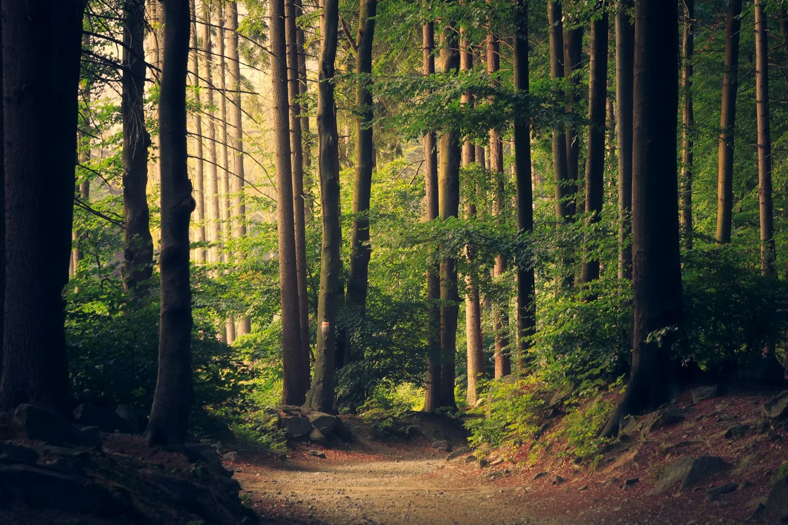
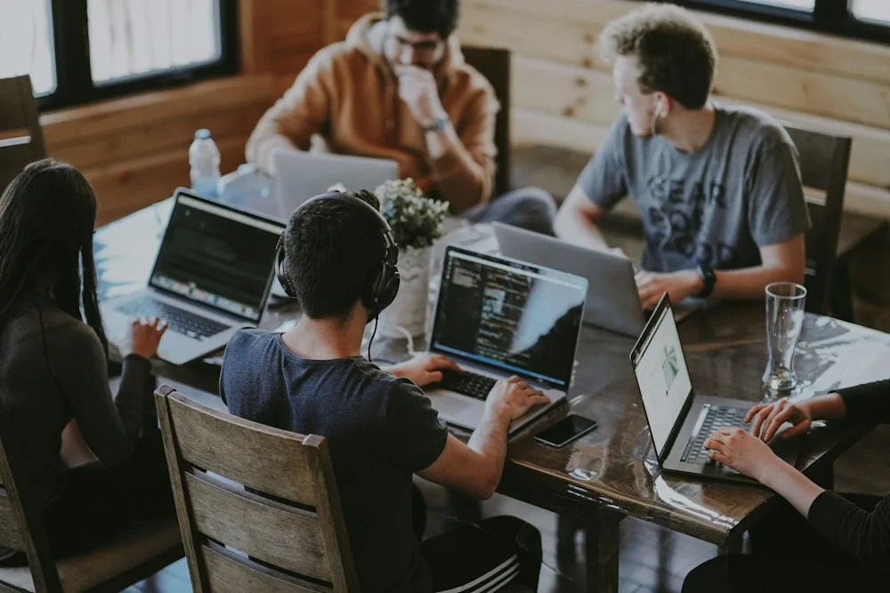
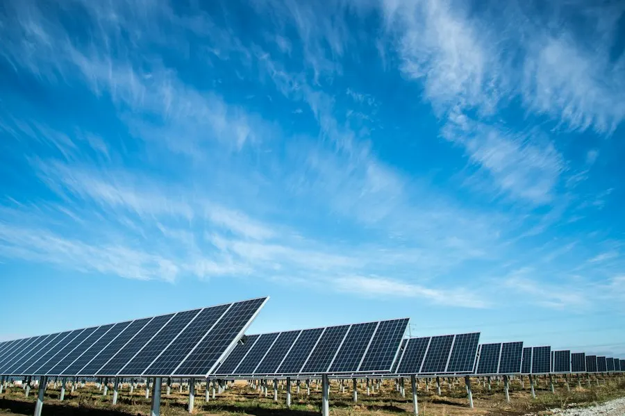

01
Aprende para
hacer realidad.
Formación en emprendimiento, sostenibilidad y herramientas digitales para fortalecer tus habilidades.
Formación y herramientas
Ideas locales. Impacto sostenible.
Tu potencial merece oportunidades. Conecta con herramientas, personas e ideas para emprender y construir una Bolivia más verde.
Para una generación que no espera el cambio.
Lo hace posible.

01 / Un espacio para avanzar
Más conexiones.
Nuevas posibilidades.
Creemos en una generación con talento para transformar su realidad. Y en lo que sucede cuando ese talento encuentra una comunidad que lo acompaña.
Bolivia EcoHub conecta innovación y sostenibilidad con formación, mentorías y redes de colaboración. Un ecosistema humano y accesible para convertir barreras en posibilidades.
Aquí, crecer es colectivoTecnología con propósito
Explora con el scroll01 / Conecta con lo que importa
Formación, conexiones y acompañamiento.
Un ecosistema para avanzar con propósito.
02 / Herramientas para transformar
No tienes que tener todas las respuestas.
Explora las conexiones que pueden ayudarte a dar el siguiente paso.
Formación en emprendimiento, sostenibilidad y herramientas digitales para fortalecer tus habilidades.
Formación y herramientasMentorías y orientación para explorar soluciones, desarrollar tu proyecto y avanzar con más confianza.
Mentorías y orientaciónRedes entre jóvenes, aliados e instituciones para compartir conocimientos y acercarte a nuevas oportunidades.
Comunidad y conexionesLas fechas, requisitos y disponibilidad de cada actividad se comunicarán en sus convocatorias.

El cambio empieza cuando nos encontramos.03 / El poder de conectar
Jóvenes, mentores, emprendimientos y organizaciones. Distintas miradas, un propósito compartido: crear oportunidades que cuiden a las personas y al planeta.
Encuentra tu lugarPosibilidades con propósito
El futuro verde tiene muchas formas.
Campos para explorar, no un catálogo de proyectos ejecutados. Encuentra un desafío que conecte contigo.
Biodiversidad, consumo responsable y soluciones que regeneran nuestro entorno.

Energías limpias, eficiencia y nuevas maneras de hacer más con menos recursos.
Soluciones inclusivas que conectan capacidades y responden a necesidades locales.
Tu ruta, a tu ritmo
Una forma de recorrer el ecosistema. Cada persona y cada idea tienen su propio camino.
Reconoce un desafío de tu entorno y aquello que te gustaría cambiar.
Conecta tu curiosidad con herramientas y conocimientos para avanzar.
Comparte tu idea, escucha otras miradas y prueba nuevas posibilidades.
Encuentra personas con las que puedas seguir construyendo.
04 / Hay un lugar para ti
Empieza desde donde estás.Si eres joven y quieres explorar el emprendimiento sostenible, empieza por conocer nuestras áreas de formación, mentoría y comunidad.
Explorar las oportunidadesEstamos preparando los canales de inscripción y contacto. Esta página no recibe postulaciones ni recopila datos personales.
Antes de dar el paso
El ecosistema está dirigido principalmente a jóvenes de Bolivia de 16 a 28 años que buscan desarrollar habilidades, emprender y generar impacto sostenible. Cada convocatoria definirá sus requisitos.
Puedes comenzar explorando una idea o fortaleciendo tus habilidades. Consulta los requisitos de cada actividad cuando se publique su convocatoria.
Los canales oficiales de inscripción aún están pendientes de publicación en esta página. Por ahora puedes explorar el ecosistema y encontrar el camino que se relaciona con tus intereses.
La propuesta combina formación híbrida y conexiones con la comunidad. La modalidad, ubicación y fechas se indicarán en cada convocatoria.
Ideas que conectan.
Jóvenes que transforman.